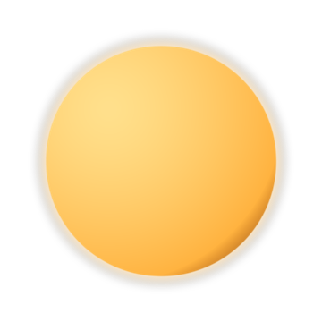
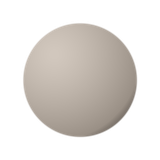
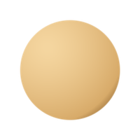
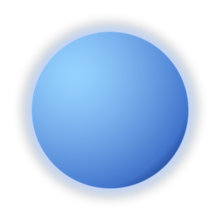
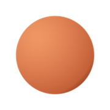
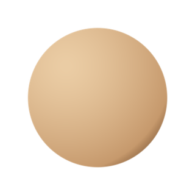
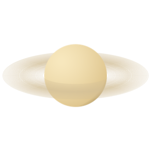
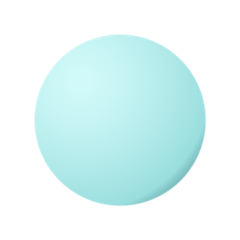
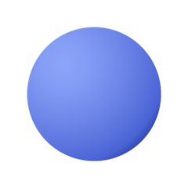
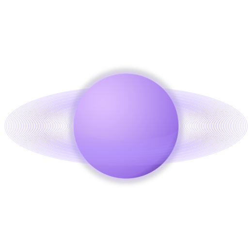

Sve ilustracije u nastavku su proceduralno generisane posebno za
ovaj projekat — svaka planeta ima svoju boju, osvetljenje i senku.
Pređi mišem preko kartice za mali efekat „prilaska".

SunceZvezda u centru sistema, čini 99,8% ukupne mase

MerkurNajbliža planeta Suncu, bez atmosfere

VeneraNajtoplija planeta zbog izraženog efekta staklene bašte

ZemljaJedina poznata planeta sa životom

Mars„Crvena planeta", cilj budućih misija sa posadom

JupiterNajveća planeta, poznata po Velikoj crvenoj pegi

SaturnPoznat po upečatljivim prstenovima od leda i stena

UranRotira „na boku", sa osom nagnutom skoro 98°

NeptunNajudaljenija planeta, sa najjačim vetrovima u sistemu
+Bonus: konceptualna ilustracija
Ilustracija ispod prikazuje stilizovanu, izmišljenu planetu — vizuelni
potpis ovog projekta, korišćen i na početnoj strani.

Sl. — Konceptualna ilustracija, izrađena isključivo proceduralnim crtanjem (bez spoljnih slika)